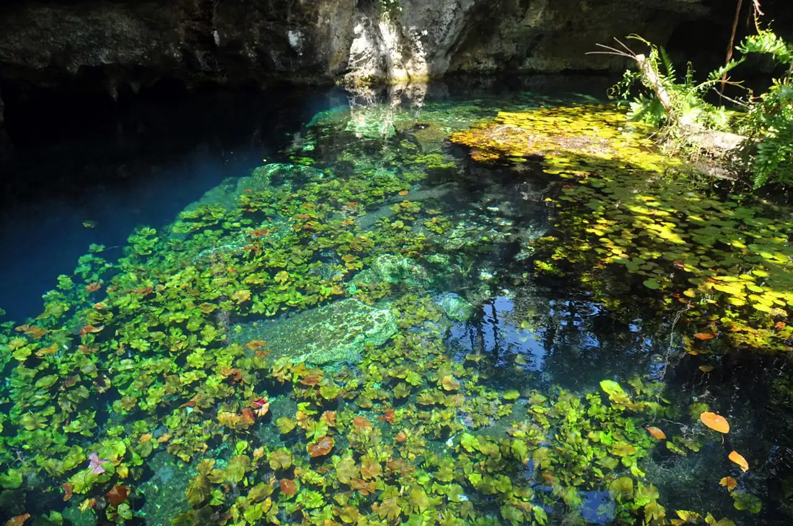

Gran Cenote
Tulum, Quintana Roo, Mexique · snorkeling, baignade, plongée

Cénote semi-ouvert à quelques kilomètres de Tulum, rattaché au vaste réseau noyé de Sac Actun. L’eau douce, d’une grande clarté, se découvre en snorkeling entre stalactites et racines, et en plongée de caverne avec un guide.
- Lieu
- Tulum, Quintana Roo, Mexique
- Niveau
- Débutant
- Activités
- snorkeling, baignade, plongée
- Type d'eau
- inland
- Coordonnées
- 20.25, -87.46 (position approximative du secteur)
Dangers à connaître
- Plongée en caverne réservée aux plongeurs formés et accompagnés d’un guide certifié : ne t’engage jamais seul sous la voûte.
- Plafonds bas et rochers glissants : bouge lentement autour des passages étroits.
Le conseil d'Ocean Buddy
Viens à l’ouverture pour profiter du calme, rince-toi avant d’entrer et oublie la crème solaire : elle abîme l’eau du cénote.
Ouvrir dans Ocean Buddy Télécharger sur l'App Store
Source : Fiche Ocean Buddy · septembre 2026 · à vérifier localement.